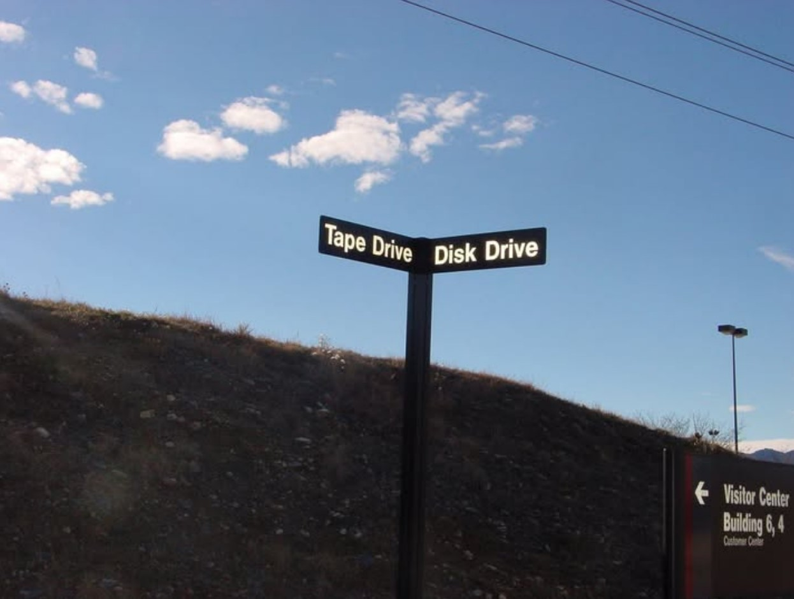

A visual collection of obsolete and rare data storage media formats.

The Big Move (1984) and "Scream Therapy"
When one of the only buildings StorageTek actually owned on ALTER street in Broomfield was sold in the early days of 1985 (it took a while to sell the building), the engineering team was moved to the LSVL 9 building. They only brought one thing from the old building: the environmental chamber, which was disassembled and glued back together with silicone adhesive! It wasn't upgraded, just reinstalled exactly the way it was originally, but it was still more than capable of freezing motor oil. They also performed operating as well as shipping profile testing in it. While the exact historical temperatures are hard to recall, the engineers would intentionally 'margin' their testing parameters to ensure the equipment could withstand the extreme requirements of uncontrolled environments (which could easily range from -50°C to +58°C).
All other facilities had to be rebuilt from scratch. The engineers took this opportunity to redesign and improve their testing capabilities. They built a solid copper floor (heliarc welded into a single piece) for ESD (Electro Static Discharge) testing. However, the most impressive addition was the new acoustics testing facility. It was constructed on a raised platform over sand fill, cutting the existing concrete floor to isolate it from building vibrations. The reverberation chamber was so quiet you could literally hear a pin drop. The semi-anechoic chamber, on the other hand, was so perfectly soundproofed that you could shut the door and scream as loud as you wanted without anyone outside hearing a thing. Naturally, some engineers began using it for regular "scream therapy" sessions!
Paranoia and Street-Level Espionage

As the company grew, the quantity of equipment requiring FCC testing increased drastically. Driving the equipment 30 miles away into the foothills became too expensive, so STK decided to build a radiated emissions test facility right on the HQ campus.
Testing these emissions wasn't just a regulatory formality. John remembered a lesson learned back in the mid-1970s while he was still in Illinois: radiated emissions from a computer room could actually be intercepted from the street level, 5 stories below! A hacker with sufficient knowledge could read the data, posing a massive security breach. Furthermore, unshielded radiated emissions could interfere with broadcast signals and cause problems for police, fire, and other emergency services.
The Bunker, the 10-Ton Turntable, and the Birth of the "Pink Pagoda"
They designed a dirt-covered concrete bunker built at ground level. They covered it with dirt in order to build the antenna field on top of it, essentially elevating the testing environment. Above the bunker, the equipment under test sat on a massive, 20,000-pound turntable that rotated during testing.
Interestingly, they placed a small IBM 4341 mainframe inside the underground bunker itself, which John ran. This was done to avoid the absurd cost of running thick underground bus and tag cables all the way from the main PE area. John even created a custom data pattern to run on the computer, consisting of his name and home phone number. Surprisingly, this specific pattern actually caused a machine under test to fail its first tests—and as a result, it essentially became the default test data transferred to all equipment!
The testing building situated above the ground plane was a totally hollow, square structure. Because it was hollow, the exterior walls had to be very substantial and self-supporting to carry the weight of the roof, the Colorado snow load, and withstand the fierce winds, which were once measured at over 100 mph on the campus! To prevent interference, the entire building was made of fiberglass. Absolutely no metal was allowed above the ground plane except for the equipment under test and the antenna. Even the bolts holding the building together and the loading dock doors were pure fiberglass. The actual loading dock platform and the mechanisms that lifted the dock hydraulics were situated to be below the ground plane. The antenna itself sat outside the main building on a ground field made of heavy wire mesh, where it was moved to different distances by hand. Bob ran all of these FCC emissions tests.
Note: There was one exception to this setup. When a fully configured tape library was simply too massive to fit inside, they had to test it on the campus helicopter landing pad (located west down the road, in the square north of the parking lot for LSVL 4) under a canvas tent! For this purpose, the helicopter pad was covered in heavy wire mesh.
The fiberglass material of the testing building was supposed to match the color of the existing campus buildings. Unfortunately, the contractor picked one specific rock from the aggregate surface as a sample—and it had a distinct pink hue! As a result, the entire FCC test facility ended up being light pink. When Bob first saw it, the first words out of his mouth were "Pink Pagoda," and the name stuck forever.
The "Dirty Laundry" Tours, the USAF, and Blue Jeans
The Product Evaluation (PE) lab in LSVL 9 wasn't just a testing ground; it frequently hosted tours for prospective clients brought in by the marketing team. What made these tours so effective was their absolute authenticity. They never put on a sanitized, sugar-coated presentation. Instead, they openly showed the clients their "dirty laundry"—the unfiltered reality of the lab. Visitors were taken straight to the production floor where they saw machines completely torn apart, with engineers and testing staff working feverishly on them.
This radical openness left a massive impression on demanding clients. When officials from the Social Security Administration (SSA) visited, they were completely sold on STK's equipment because of this unvarnished tour. The STK marketing representative who organized the SSA visit closed a significant sale that subsequently spread across many other three-letter government offices. She was so grateful for the PE team's help that she even sent John a Christmas gift that year.
The unsanitized reality of the lab also impressed the military brass. One day, an official United States Air Force (USAF) delegation from Denver’s Lowry Air Force Base visited the production floor. The colonel and his superiors walked in wearing full dress uniforms, proudly displaying all their insignia and ribbons. It was like a parade that literally brought the entire production floor to a standstill as everyone stood up to take notice. The tour was highly successful, resulting in word spreading to other military computer centers.
As John laughingly recalls: "It didn't do my reputation a bit of good that I was leading the group in blue jeans and casual clothes!" But the greatest irony of all? John recognized the USAF colonel in the full dress uniform the minute he met the delegation at the front door lobby of LVSL 9—it was his classmate from the MBA program! StorageTek allowed employees to take MBA classes on campus, and John attended these alongside various other students.
John was always proud of the PE team's work, and his enthusiasm even extended to his studies. He once arranged a special after-hours tour of the lab for his MBA class and instructor to openly share the exciting reality of what he did for a living.